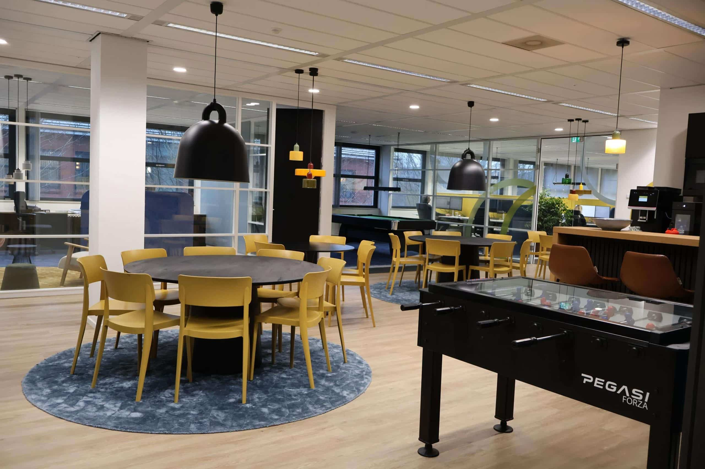
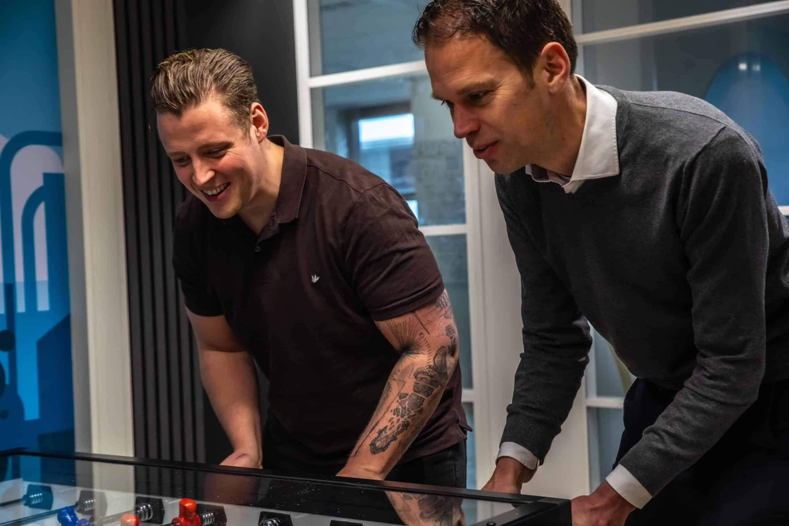
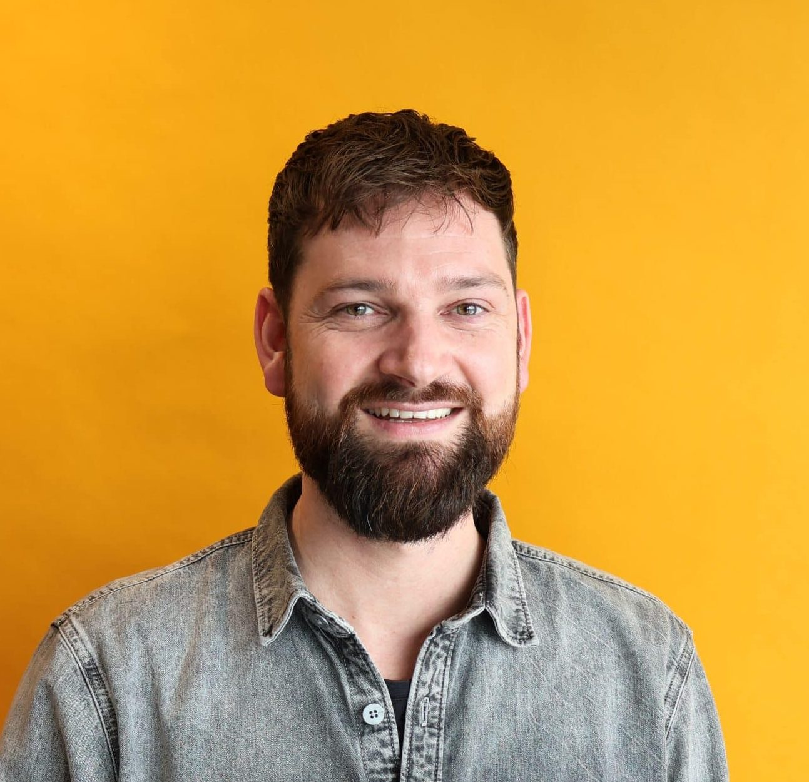
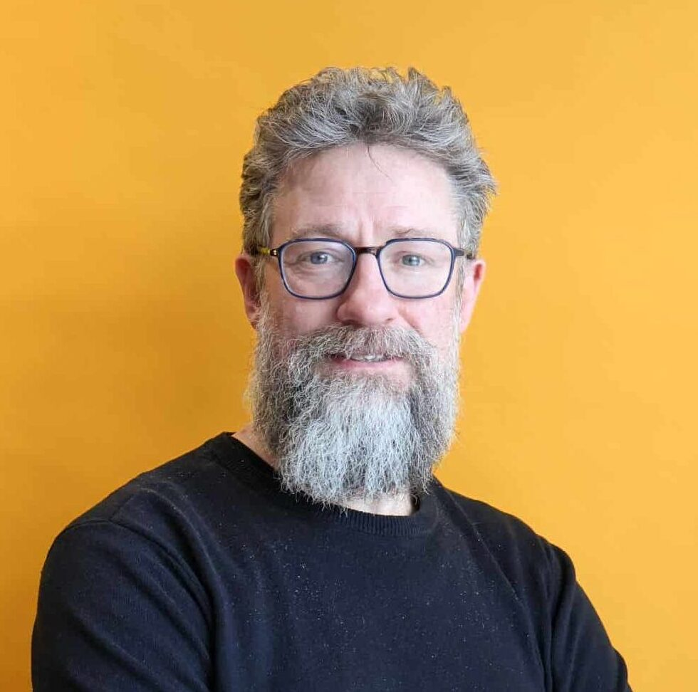
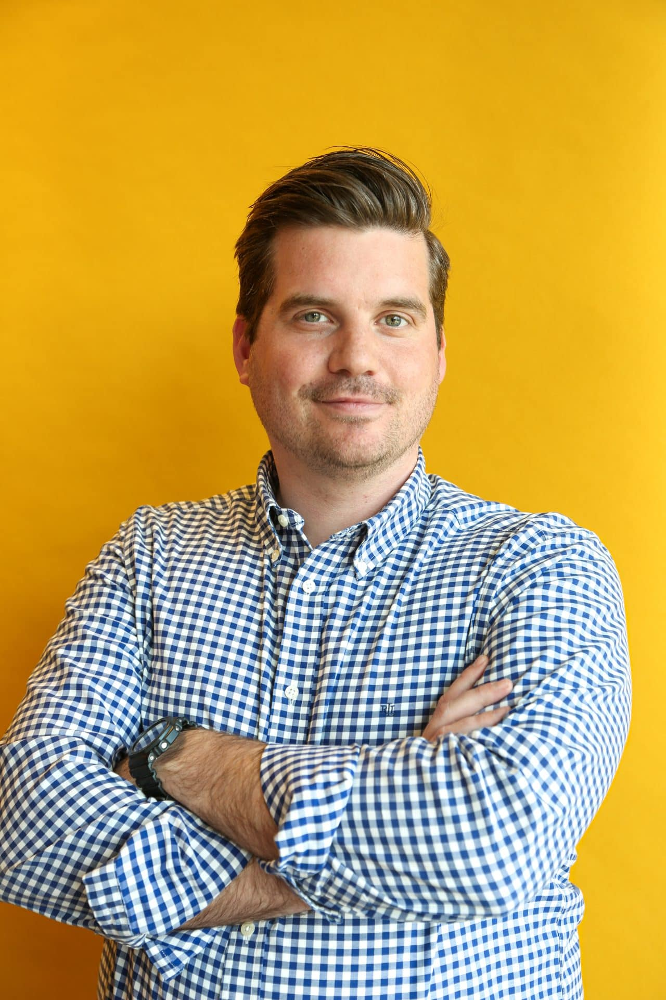
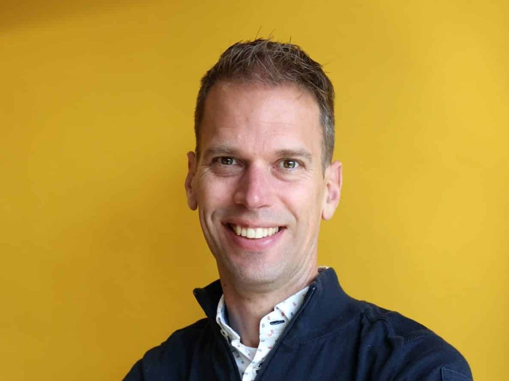
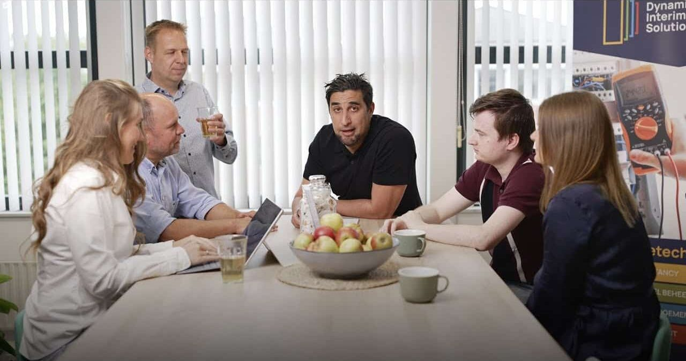
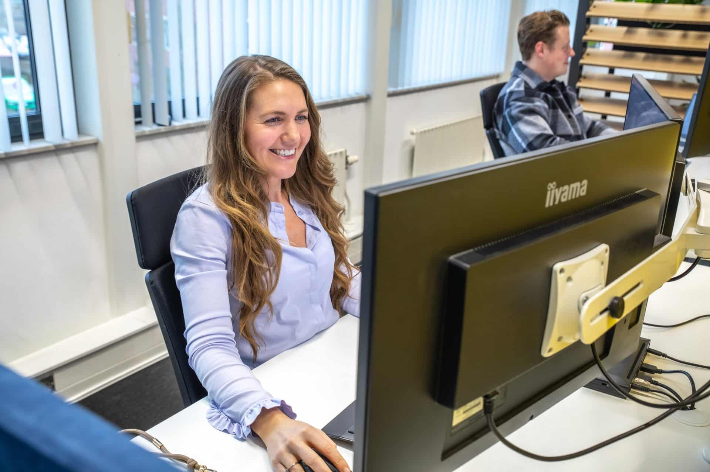

Werken bij DIS Group
Van nature transparant: Ons motto, onze missie. Transparantie stroomt door ons bloed, zowel binnen de organisatie als buiten de organisatie. Binnen DIS zijn er korte lijnen, vinden wij eigen inbreng belangrijk en werken wij vol passie met elkaar aan het zo goed mogelijk eindresultaat. Om de deskundigheid van de collega’s op peil te houden, hebben wij regelmatig kennissessies, die wij altijd gezellig afsluiten met een hapje en drankje. Door met elkaar te sparren, komen we verder. Wij houden van hard werken, maar ook van ontspannen. We vieren graag kleine en grote momenten met elkaar, op kantoor of in de vorm van een borrel of uitje.
Zou jij je thuis voelen binnen DIS? Kijk dan bij onze openstaande vacatures, vul het contactformulier in of neem direct contact op met Rianne:
Neem contact op

Vacatures
We zijn per direct op zoek naar

32-40 uur
Vianen
Junior / Medior AI Developer
Als AI Developer werk je aan het ontwikkelen van AI-oplossingen en AI Agents voor onze klanten.
Bekijk de vacature
32-40 uur
Vianen
Medior / Senior Power BI Consultant
Als Power BI Consultant vertaal je data naar heldere dashboards en stuurinformatie die klanten direct helpt betere beslissingen te nemen.
Bekijk de vacature

32-40 uur
Vianen
Medior / Senior Technisch Consultant
Als developer werk je aan slimme maatwerkoplossingen in Business Central voor uiteenlopende klanten en projecten.
Bekijk de vacature

32-40 uur
Vianen
Senior Functioneel Beheer Consultant
Als senior functioneel beheer consultant ben je dé inhoudelijke expert voor onze klanten.
Bekijk de vacature

32 - 40 uur
Vianen
Medior Functioneel Beheer Consultant
Als medior functioneel beheer consultant ondersteun je gebruikers, analyseert meldingen en denkt actief mee over verbeteringen in het ERP-landschap
Bekijk de vacature
32-40 uur
Vianen
Medior / Senior Financial Consultant
Als medior / senior financial consultant richt je je naast financiële processen ook op processen als projectmanagement. service & onderhoud.
Bekijk de vacature
32-40 uur
Vianen
Medior / Senior 4PS Construct Consultant
Als consultant richt je je op het optimaliseren en implementeren van bedrijfsprocessen bij onze opdrachtgevers.
Bekijk de vacature
Een kijkje in de keuken
Vanuit ons kantoor in Vianen werken wij in een hecht team, waar iedereen iets unieks bijdraagt aan het behalen van onze doelen. We hebben passie voor wat we doen en werken écht samen. Vol energie gaan we nieuwe uitdagingen aan en leiden ze in goede banen. Een project is voor ons pas geslaagd wanneer het maximale gelukt is. Wil jij kijken hoe wij dit doen?
Neem contact op

Sollicitatieproces
✉️ Sollicitatie: je stuurt ons je CV en een korte motivatie. Wij laten snel van ons horen, vaak al binnen een paar dagen.
💬 De kennismaking: we plannen een informeel gesprek om elkaar beter te leren kennen. Jij hoort alles over DIS Group en wij zijn benieuwd naar jouw verhaal.
💻 Tweede gesprek: we duiken dieper in je ervaring en skills. Er schuiven collega’s aan om kennis te maken en door te spreken wat je functie in de praktijk precies inhoudt.
✍️ Jouw contract: is er een match? Dan doen we je een passend aanbod en maken we alles in orde. Snel, helder en zonder gedoe.
🎯 Knallen: welkom bij DIS Group! We zorgen voor een goede start, duidelijke verwachtingen en werkzaamheden waar je energie van krijgt.

Werknemers aan het woord

Antoinette Oosterwijk
Lees het verhaal

Pim Donderwinkel
Lees het verhaal
Mariska van de Laar
Lees het verhaal